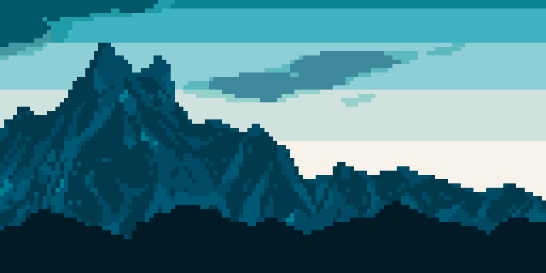

Abstract
pixel-artist | front-end web developper | indie game developperJSとScalaとMinecraftが好きです。
Illustrations




Unauthorized use of the work is prohibited.
Products
Aseprite

Export as PSD
LCD Pixel Filter
Smooth Filter
Voiceroid
Voiceroid2 Automation Lib